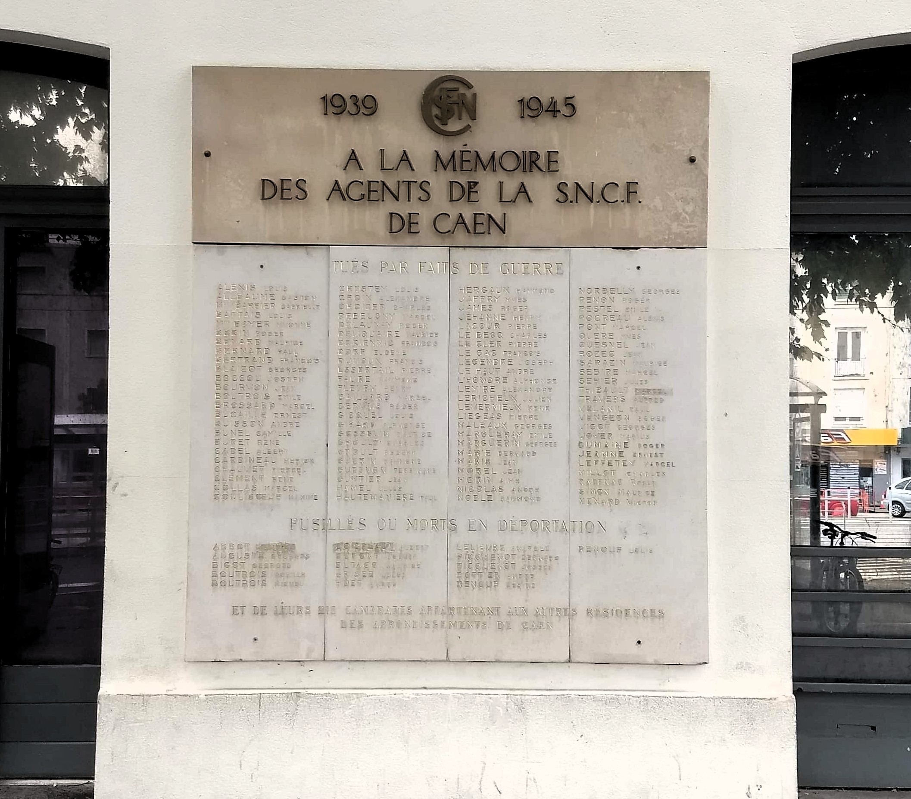
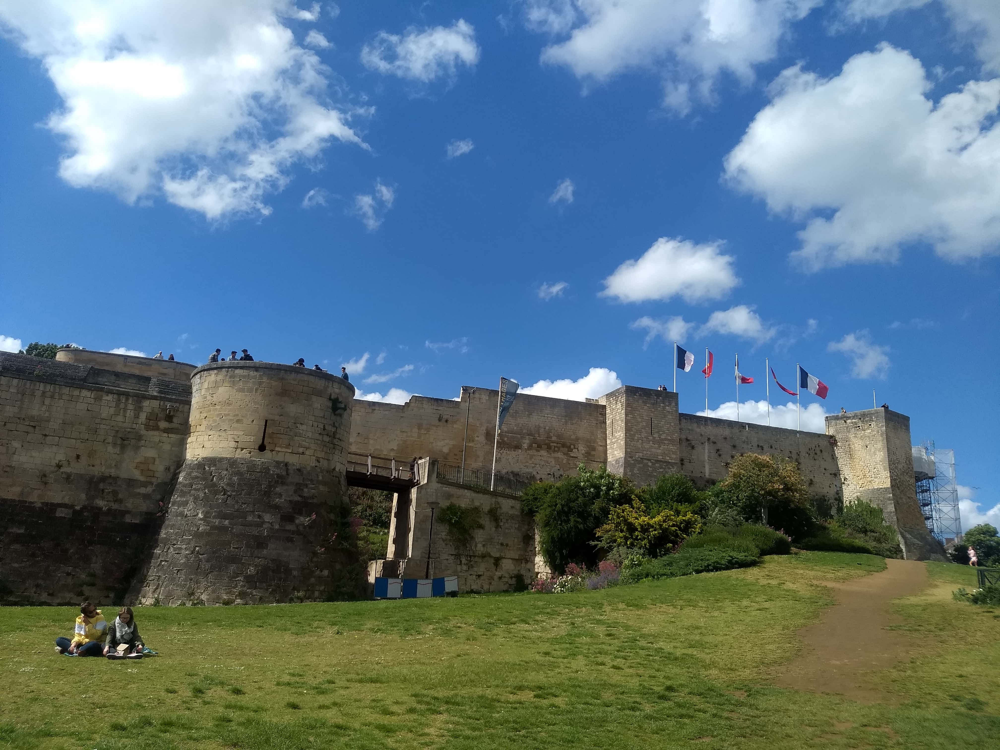
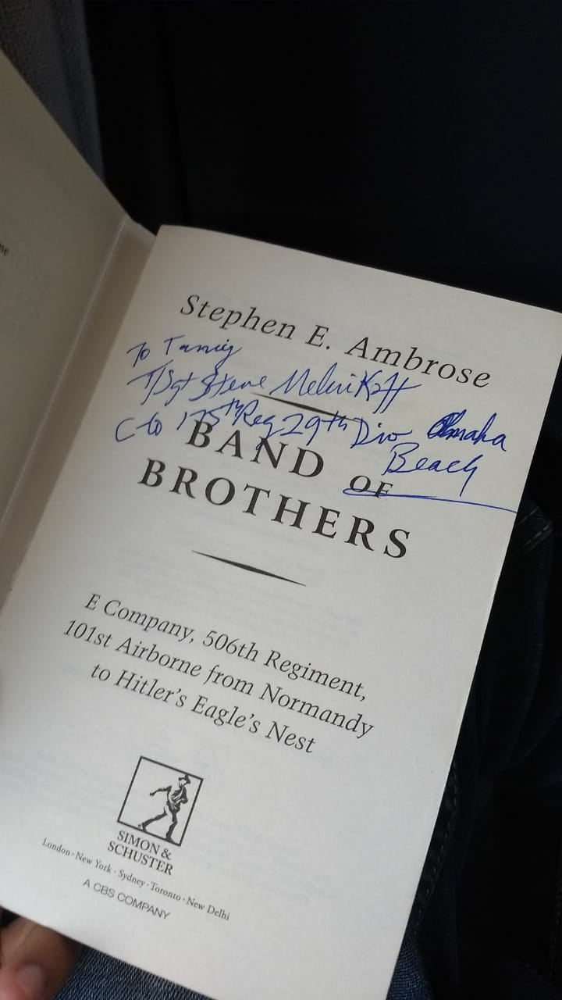
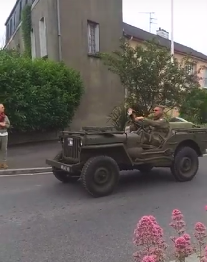

I met a 99 year old World War II veteran
Last week, I made a last minute plan to visit Normandy, knowing that it was
the 75th anniversary of D-Day. I'd wanted to visit some other place, but
the tickets got expensive, so I ditched that plan and booked tickets to
Caen, in Normandy.
What I did not know, however, was that I was gonna meet some people, the
likes of whom I've only ever read or watched about. This article will be
about my life-changing experience of visiting various places in Normandy,
all in 24 hours. There's going to be another article listing out the
details of how to plan a trip there, but this one's gonna be the story of
my visit, and a little poetic.
I'd heard about the Normandy landings many times, but the first time I
actually got interested was when I saw "Band of Brothers", the HBO
miniseries about E Company, 2nd Battalion of the 506th Parachute Infantry
Regiment of the 101st Airborne Division (Henceforth to be referred to as
E Coy). And what better a time to watch it than during my end semester
exams, which is exactly what I did last semester. The series is quite
dramatic and emotionally moving, and while that makes it a great series,
that also makes it historically less accurate. Which is why I later
bought the book of the same name by Stephen Ambrose, on which the series
is based.
Cut forward to last week, June 7.
It was a long weekend with Whit Monday, so I decided to go somewhere. It
was in the back of my mind that the 75th anniversary of D Day
was this week, but the exact date was falling in the middle of
the week. So I'd been ignoring the idea of visiting Normandy. But when
Friday came and I realized that tickets to most places were expensive,
I checked the price of a ticket to Caen - by bus -
and it was cheap (27 EUR, return). I figured, maybe I could still find something
going on over there, maybe there's people still visiting the place for
the anniversary. And that's how I started a trip that cost me ~60 EUR and
gave me a priceless experience.
1520 hrs
I reach Caen, all ready to experience the feel of the largest seaborne invasion in history. I walk a bit, and right outside Gare de Caen I see this:

It's a memorial to the agents of SNCF (the French national railway
company) who were martyred at Caen. I didn't know SNCF was that old.
Turns out it was established in 1939, right at the beginning of the war.
The centre of Caen is about 2 km from the Gare, so I walk towards it,
crossing the Orne. There, I come across this huge castle:

This is the Château de Caen, and it is a Norman castle (yes, Norman ~ Normandy), and turns out it's about a thousand years old. Normandy has its fair share of pre-world war history, but that's not what I was there for. I had to see what Band of Brothers was about, for myself. In real life.
1800 hrs
I spend so much time lazing around the castle that I forget that the
next train to Carentan is at 1806 hrs. So I walk the 2 km back to Gare
de Caen as fast as I can and reach 10 minutes before the train is to
depart. I hurriedly buy a ticket from the kiosk and reach the platform
with 5 minutes for the train to leave. Okay, so far, nothing out of the
ordinary.
I'm pacing around the station, waiting for the train, wondering if it was
actually a good idea to come here. So far, it doesn't feel like I've seen
something that gives me the WW feel. Something that I look at, and know
that "Yes, this thing is real, and this was there in the war. It's
a reminder of the horrible things we humans can do, and of the heroic
things we can do to overcome them."
Which is when I turn around to see an old person in a familiar looking
jacket and an even more familiar cap. I look closely to see the words "WORLD
WAR II VETERAN" written on the cap.
Wait what?
Is this happening for real?
I looked again, but yeah, sure enough, I'd read it correctly.
I, who had only been interested in WW II because of a series I'd once
watched and could have only imagined meeting them, had only
seen pictures of them on the internet, had only heard stories about them,
was now standing next to a World War II veteran.
The train was about to approach, and I was a little nervous to try and
talk to him. But I told myself that I had to do it; I'd been reading up
on WW II and that I had to talk to him. So I approached him, and
asked,
"Are you a WW II veteran?"
Tanuj, how stupid of you, of course he's a veteran, are you an idiot?
"Yes, I was at the Omaha beach, World War II", he said warmly.
Words kept coming out of my mouth, but all this while I was just in awe
of this encounter, and of how warmly he had replied to my stupid question,
even though I had just disturbed his afternoon with his family.
The train had approached now, and I remembered I had a copy of Band of
Brothers with me. T/Sgt. Steve Melnikoff kindly agreed to sign it inside the train.
My trip had suddenly become meaningful.

To be continued...
Next article: The D Day festival at Carentan, hitchhiking in Normandy, and visiting the Utah Beach
